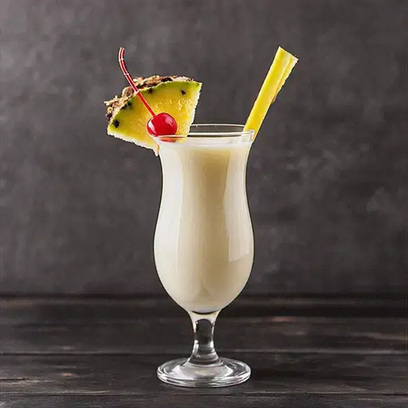

Gin Tônica
O gin tônica surgiu no século XIX. Originalmente, o gin era usado para fins medicinais. O tônico, com quinina, ajudava a combater a malária. Soldados britânicos na Índia começaram a misturar gin com tônico para tornar o remédio mais palatável. Com o tempo, a bebida se popularizou entre os civis. Hoje, é um dos coquetéis mais consumidos no mundo.
- 50 ml de gin
- 2 doses de água tônica
- Gelo

Moscow Mule
O Moscow Mule é um coquetel que ganhou popularidade na década de 1940 nos Estados Unidos. Sua base é o vodka, misturado com gengibre e suco de limão, e é servido tradicionalmente em uma caneca de cobre. A história do drink está ligada à combinação de dois produtos: o vodka russo e a cerveja de gengibre, um dos produtos mais consumidos nos EUA na época.
- 50 ml de vodka
- 3 colheres (chá) de xarope de gengibre
- 100 ml de água com gás
- Suco de ½ limão
- ½ colher (sopa) de açúcar
- Gelo

Piña Colada
A Piña Colada é um coquetel tropical originado em Porto Rico na década de 1950. Sua receita clássica combina rum, creme de coco e suco de abacaxi, criando um sabor doce e refrescante. Acredita-se que tenha sido criada por Ramón "Monchito" Marrero, bartender do Caribe Hilton, que buscava um drink que capturasse a essência da ilha.
- 1 e 1/2 doses de rum
- 3 doses de suco de abacaxi
- 1 dose leite de coco
- 1 dose leite condensado
- 6 pedras de gelo

Mojito
O Mojito é um clássico cubano que remonta ao século XVI, quando os indígenas já usavam a mistura de folhas de hortelã, rum, açúcar e limão. A versão moderna do coquetel ganhou fama em Havana, nos anos 1930, especialmente com a preferência de figuras históricas como Ernest Hemingway.
- 1 limão
- 1 dose de rum branco (cerca de 50 ml)
- 3 ramos de hortelã
- 1 colher (chá) de açúcar
- Cubos de gelo a gosto
- Club soda ou água com gás para completar
Sobre Nós
Drink Fast, o seu guia definitivo para a preparação dos melhores coquetéis clássicos. Nosso objetivo é oferecer um espaço dedicado aos apreciadores da coquetelaria, fornecendo receitas detalhadas e instruções passo a passo para a criação de drinks icônicos, como Gin Tônica, Moscow Mule, Piña Colada e Mojito. Acreditamos que a arte da mixologia deve ser acessível a todos, desde iniciantes até entusiastas experientes. Por isso, disponibilizamos informações claras e precisas para que você possa preparar seus drinks favoritos com facilidade e perfeição.